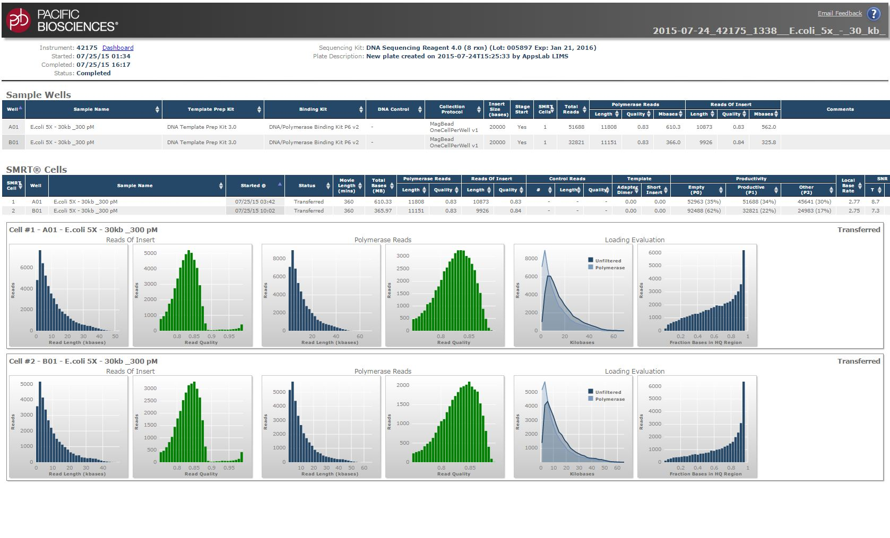
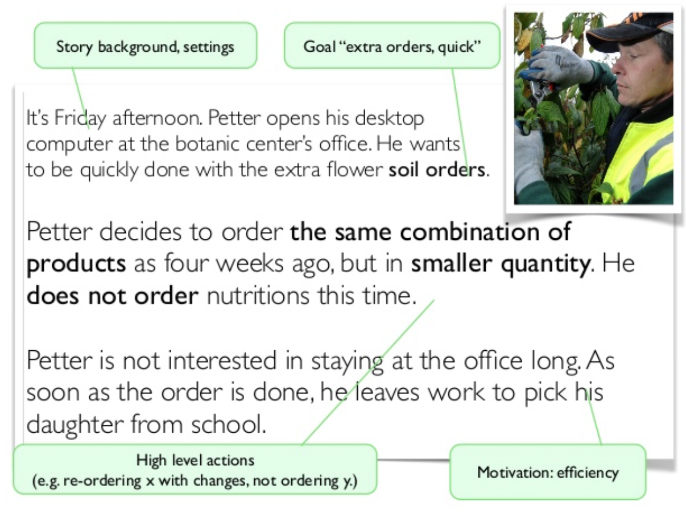
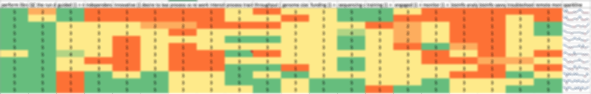

- Product manager
- User research and analysis
- Participatory design research
- Interaction design
- Requirements development
Pacific Biosciences develops DNA sequencing technology, including hardware instrumentation with embedded control software, biochemical reagents, and data analysis software.
As the product manager for the instrument and for its embedded and run-tracking software, I visited a number of customer sites to observe and interview the technicians who ran our installed instruments, and the lab managers who were responsible for capital equipment purchases and for ongoing management of lab services. By engaging with the customers continuously, and by including the service and support staff's expertise, we created an all-new web-based run monitoring and quality-control software that was validated with real users before launching it.
CONCLUSION AND IMPACT
There were some assumptions built into the software design of the original PacBio RS instrument that turned out to be false once the instruments began to be installed in the field. I was able to help improve the instrument run-monitoring and data-QC software both in terms of the information presented, as well as in the manifestation. Internal teams who had built custom software to address pain points began to use the built-in software instead, which helped to further validate its completeness and utility.
Findings from the research also influenced the development of the PacBio Sequel System embedded- and run-monitoring-software.

The RS Dashboard software showing an example DNA Sequencing report.
ADDITIONAL RESULTS
Based on the observations during my customer visits, other changes were made. For example, packaging was updated to reflect how the technicians' labs were set up, and how instrument runs were documented and tracked. For example, barcode scanning of the boxes was often a pain because the scanner computer was by the instrument, which was not necessarily next to the fridge where reagents were stored. The simple improvement to help with this problem was to put an additional barcode sticker inside the reagents box that could be stored near the computer and stuck into a lab notebook for record-keeping.
PROCESS AND ARTIFACTS
For this project, I closely followed the Cooper Goal-Directed Design process, including the creation of personas and scenarios to generate narratives around the use of the software. I was able to rely on the user research methods that I had developed previously with Applied Biosystems and a collaborative project with IDEO.

Example scenario from IxDworks.com. Actual work product is proprietary. Each step in the narrative should be analyzed for what the user does (action), what they are thinking (including information inputs and outputs), and potentially how they feel (emotional dimension).

Persona discovery process. The details are proprietary, of course.